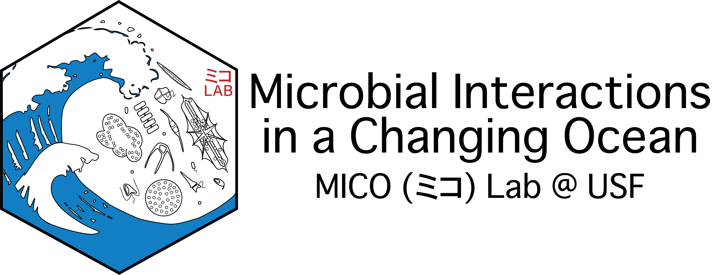

MICO Lab Manual

Introduction
This lab manual was primarily inspired by Dr. Mariam Aly at Columbia University. I originally learned of her lab manual from an editorial she wrote for Nature Magazine. The goal of the lab manual is to clearly lay out policies, practices, expectations, and roles in the lab to maximize transparency and make everyone as comfortable and happy as possible.
Like Mariam’s lab manual, this lab manual is a work in progress—a living document. The lab manual will be updated as the lab grows and matures and new situations come up. If you have ideas about things to add, or what to clarify, please talk to me (Maggi, the PI) and we can work out how best to edit or amend the manual.
Moreover, if you feel that I or the lab is not living up to the manual, please talk to me. We will work it out! This lab manual is intended to be a starting point for a positive lab experience and mentor-mentee relationship, but ultimately, positive experiences and relationships require active investment and refinement over time.
New lab members are expected to read this manual, but I suspect it may also be useful to those who are deciding if they want to join the lab in the first place. If you’re a PI or a trainee in a different lab and want to write your own lab manual, feel free to use this one for inspiration, but I also encourage you to read Mariam’s Nature article, her lab manual, and the other manuals she drew inspiration from.
Expectations and Responsibilities
Everyone
These expectations and responsibilities are for everyone: PI, postdocs, technicians, grad students, undergrads, and visiting researchers. They are broken down into some big picture items and some more granular, smaller picture guidelines.
Big Picture
The truth is that science is hard, but it can also be really fun. In the MICO Lab, we want to maximize the fun, while still doing good science. We want to make sure that everyone experiences a positive, engaging, hostility-free, challenging, and rewarding lab environment. To maintain that environment, we all have to do a few things:
Work on what you’re passionate about, work hard at it, be proud of it, have fun at it.
Be extremely careful. Think things through, double and triple check, implement sanity checks, and ask others to check plans and results. Don’t rush. It’s OK not to be fast!
Mistakes happen, don’t keep them a secret. By sharing mistakes and talking through them, we learn from them and prevent others from making the same mistakes. Discussing and rectifying mistakes early, prevents bigger problems later on. No one should feel ashamed for making a mistake.
Uphold academic integrity (i.e., no plagiarizing, manipulating data, inventing data, or omitting data). Science is about finding out the truth, and null or unexpected results are still important. Some of the most interesting science has stemmed from unexpected results!
Support your lab-mates. Help them out if they need help. A lot of work in our lab is labor and time intensive (e.g., daily measurements for growth-curves, filtering liters and liters of sea water, washing and washing and washing glassware) and often a little help can go a long way. Help others, and you can expect others to help you when you need it.
Respect your lab-mates. Respect their strengths and weaknesses, respect their desire for quiet if they need it, and for support and a kind ear when they need that. Respect their culture, their religion, their beliefs, their sexual orientation.
If you’re struggling, tell someone (feel free to tell Maggi). Your health and happiness should always come first and the lab should look out for the well-being of all its members. We are here to help. It’s OK to go through hard patches (we all do). Don’t be shy about asking for help or just venting, but it’s also not necessary to share any details of your situation if you do not want to. Simply sharing that you are facing a challenging time is enough for others to lend extra compassion and support.
If there is any tension or hostility in the lab, it should be addressed as soon as possible. No one can thrive when they feel threatened or disrespected. Tell Maggi about conflicts so we can move towards resolving them quickly.
If you have a problem with Maggi and are comfortable telling her, do it! If you aren’t comfortable telling her, talk to another faculty member in CMS you are comfortable talking to or to an administrator.
Maintain work life balance, take care of your mental and physical health, take care of your friends and family, do what brings you joy, and never feel bad for taking time off of work.
Small Picture
These are a few day-to-day things to keep in mind that will keep the lab running smoothly:
Keep the lab clean. As a molecular lab, it is of utmost importance to keep the lab clean. Wipe down surfaces and equipment with 70% EtOH after use, wipe RNA areas with an RNase cleaning agent, clean up spills right away, don’t leave dishes in the sink, keep benches clear, label everything.
If you’re sick, stay home and take care of yourself. Because you need it, and also because others don’t need to get sick.
No one is expected to come into lab on weekends or holidays. No one is expected to work late into the night. This lab values productivity and happiness over presenteeism. Get your work done when and where makes you most productive and happiest.
If you use something up, replace it or tell Maggi to order more. Take the last PCR strip? Tell Maggi to order more! Use 25 tip boxes? Refill them!
Make sure the door to the lab is locked if no one is inside. Turn off the lights if you’re the last one leaving for the day.
Role-specific Expectations and Responsibilities
Principal Investigator
As the PI, I pledge to:
Support you (scientifically and financially) and foster a supportive work environment that facilitates your success and happiness.
Give you feedback on a timely basis, including feedback on project ideas, figures, posters, talks, manuscripts, and applications.
Be available in person and via e-mail on a regular basis, including regular meetings to discuss your research (and anything else you’d like to discuss).
Support your career development by introducing you to other researchers in the field, promoting your work in talks I give, helping you find and attend appropriate training programs and conferences, promoting your talks, and writing recommendation letters for you.
Help you prepare for the next step of your career, whether it’s a post-doc, a faculty job, or a job outside of academia to the best of my ability.
Be transparent about the state of the lab by regularly sharing information about ongoing and new collaborations; grants in preparation, submitted, funded or declined; manuscript progress; and more. Once a year, I will host a state of the lab meeting where all of this information is formally laid out. However, feel free to ask about any of these things at any time!
Post-Docs
In addition to the guidelines and responsibilities for everyone, postdocs are also expected to:
Develop an independent line of research.
Keep a detailed lab notebook (either digital or paper).
Help train and mentor students in the lab (both undergraduate and graduate) when they need it—either because they ask, or because I ask you to.
Present your work at conferences and seminars.
Apply for grants and/or fellowships .
Apply for jobs (academic or otherwise) when you’re ready. Applying to either academic or non-academic jobs can be grueling, with lots of time required for preparing application materials and prepping for interviews. Ask for help! Let the lab know when you are applying for something. We are rooting for you (and we can learn from your experiences)!
Graduate Students
In addition to the guidelines and responsibilities for everyone, graduate students are also expected to:
Develop your dissertation research. Your dissertation should have at least 3 substantial experiments or projects that are related to a big-picture question that you have. Much of your work will need to be done independently, but remember that others in lab (especially Maggi!) are there to help you. Don’t be afraid to ask for help!
Keep a detailed lab notebook (either digital or paper).
Help mentor undergraduate students in the lab when they need it—either because they ask, or because I ask you to. Undergrads can also help you collect data.
Present your work at conferences and CMS events.
Apply for fellowships and awards.
Think about what you want for your career—academia (research or teaching), government science (NOAA, USGS, state agencies), industry science (e.g., biomedical, etc.), data science, science writing, something else?)—and talk to Maggi about it to make sure you’re getting the training you need for that career. What you want for your future is what you should be working towards and receiving help for—no single career track is better or more preferred than the others.
Make sure you meet all college deadlines (e.g., proposal defense, qualifying exams, thesis submission and defense). We can work on a goal timeline together, but ultimately, it is up to you to make it happen.
Prioritize time for research. Coursework, TAing, and outreach are important, but in the end it’s your research that gets you your Ph.D. or M.Sc.
Undergraduate Students
In addition to the guidelines and responsibilities for everyone, undergraduate students are also expected to:
Assist other lab members with data collection and analysis, as well as lab maintenance tasks, such as cleaning glassware and prepping media.
Keep a detailed lab notebook (either digital or paper).
Develop your weekly schedule by talking to your graduate student mentor or your postdoc mentor. You should be coming to lab every week and scheduling enough time to get your work done.
If you are earning course credit for research, you must also attend lab meetings when your schedule permits, present at one lab meeting, and submit a write-up of your research by the end of the semester
Code of Conduct
In addition to USF’s Code of Conduct, members and visitors of the MICO lab are expected to maintain research ethics, integrity, and collegiality in order to foster a welcoming, happy, and productive community for EVERYone. The MICO lab values and celebrates diversity, inclusion, equity. Harassment of any kind will not be tolerated. This includes, but is not limited to harassment related to gender, gender identity and expression, age, sexual orientation, disability, physical appearance, body size, race, or religion (or lack thereof). Harassment includes, but is not limited to offensive verbal comments, displaying sexual images in public spaces, deliberate intimidation, stalking, following, unwelcome photography or recording, sustained disruption, inappropriate physical contact, and unwelcome sexual attention. Anyone asked to stop a harassing behavior must comply immediately. Concerns about harassment can be reported to Maggi or reported through the university.
Scientific Integrity
Research Misconduct
The lab, the college, and USF, are committed to ensuring research integrity and take a hard line on research misconduct. Fabrication, falsification, and plagiarism are all intolerable. Read USF’s policies on the conduct of research carefully.
Reproducible Research
As lab policy (and as required by most universities, funding agencies, and scientific journals), we will make our data public alongside our analysis pipelines so that our results are fully reproducible. Moreover, lab notebooks should be detailed and readable, protocols should be clearly written out and kept in the lab Google drive or linked from protocols.io, and methods sections of theses and publications should include all information necessary to recreate the published results.
In order for results to actually be reproducible, the analysis pipeline must be organized and well documented. Code should be commented so that less-experienced users can understand what you did and why, and kept along side necessary data in the designated project repository in the lab’s GitHub (https://github.com/MICOlab-USF). If data products are too large to be stored in GitHub, they should be available in an appropriate repository, such as Zenodo or NCBI. Code should also run if an outside user clones the repository, so pay attention to paths.
Talk to Maggi to have a repository created in the lab GitHub and to be added as a collaborator to the repository so that you can push to it.
Lab Resources
Slack
Slack will be used as the primary means of lab communication. The best way to get in touch with Maggi regarding projects or lab issues is via a direct message on Slack. If you are having an emergency in or out of lab, call or text Maggi.
Notes for the MICO Lab Slack: When posting messages or looking for updates, check the appropriate channel. Try to keep each channel on topic, so that people can subscribe only to the channels that concern them and find information quickly. For messages to one person or a small group, use direct messages.
Full-time lab members should install Slack on their computers and/or phones. Part-time lab members should also check Slack regularly. You should of course feel free to ignore Slack on evenings and weekends—and Maggi probably will, too!
Google Drive
The lab will have a common Google Drive for storing protocols, data, theses, manuscripts, etc. Please make sure you have access to the drive and upload your materials there.
GitHub
The lab’s GitHub (https://github.com/MICOlab-USF) is used for version control and backing up code, as well as to share code and data with the world. Be sure to push to your repositories often, so that the code stays up to date. When you are ready to publish a manuscript, make sure that all the code for that manuscript is reproducible (i.e., it runs on someone else’s machine). Have other lab members check it if possible.
Wiki
I hope we will build a lab wiki together! The lab wiki would hold all of the information you need to get started, including tasks that need to be done upon arrival, day-to-day housekeeping duties, forms and flyers, programming and stats tips, information about accessing the high-performance computing cluster and lab servers. Lab members would edit it when they obtain information that will be useful for others to know! If you want to help get this started, let Maggi know :)
We will have a lab listserv for sending e-mails to the entire lab when necessary (stay tuned).
There is also a lab e-mail account that only Maggi can access (for now) (micolab.usf@gmail.com). This email is for people making general inquiries about the lab and for lab accounts (e.g., GitHub).
General Policies
Hours
Being in lab is a good way of learning from others, helping others, building camaraderie, having fast and easy access to resources (and people) you need, and being relatively free from distractions at home. That said, hours in academia are more flexible than other jobs (but you should still treat it as a real job (i.e., ~40 hours/week)). The main goal is for you to get your work done, so if you find that you are more productive at home (lab-mates can be chatty sometimes), feel free to work at home. If don’t have any meetings or lab work on a particular day, it might be a good day to work at home. However, please don’t only work at home! Of course, if there are health concerns (e.g., related to COVID-19, etc.), working at home often is perfectly okay.
I sometimes work during nights and weekends. This means that I will sometimes send emails or Slack messages outside of normal working hours. For the most part, I will try to have these messages scheduled to be sent on Monday or the following morning, but I suspect that this will sometimes fail. I do not expect you to respond until you are back at work (please ignore me!). I do not expect there to be cases when I suddenly and urgently need something from you over the weekend (e.g., for a grant deadline), but should I anticipate that happening, I will bring it up in advance so we can plan accordingly. All this said, I realize that being told you can ignore my messages might not take away the stress of seeing my messages if you check work email or Slack in the evenings or on weekends. If my off-hours messages are unwelcome and cause distress, please talk to me, and I work harder at not bothering you during your time off.
Although I admit that I sometimes work weekends, I try to only do that when absolutely necessary. Please respect that by making sure to give me adequate warning about impending deadlines so that I can get things done for you (e.g., write letters of recommendation, give feedback on manuscripts, etc.) while maintaining my own work-life balance. For more details, see the Deadlines section.
Meetings
Weekly Lab Meetings
Weekly lab meetings (~1.5 hours each) are meant to be a forum for trainees to present project ideas and/or data to get feedback from the rest of the group. Projects at any level of completion (or even not yet started!) can benefit from being presented. These lab meetings can also be used to talk about methods, statistical analyses, new papers, and career development. For paper discussions, everyone must come to lab meeting having read the paper and prepared with comments and questions to contribute. Some weeks we may explore a particular issue and have people read different papers – in that case, come to lab meeting having read your paper and be prepared to summarize it for the group.
Each trainee (technicians, students, post-docs) is expected to present at least once every semester. These meetings are informal, and you can do what you wish with your slot—just be prepared to contribute something substantive. Lab members are also expected to attend every meeting (obviously, illnesses, doctor appointments, family issues, etc. are a valid reason for missing a meeting). Undergraduate students are encouraged to attend as often as possible (assuming it fits in their course schedule).
Occasionally, we may have joint lab meetings with other faculty in the department—these may be combined with our weekly lab meeting or be at another time but replace our normal meeting. We will also use lab meetings to prepare for conference presentations and give people feedback on job talks or other external presentations. Lab meeting agendas and notes will be kept in the #lab-meetings channel on Slack.
Individual Meetings
At the beginning of each semester, we will set a schedule for weekly meetings. Each full-time lab member (technicians, graduate students, post-docs) will have a one-hour slot set aside to meet with Maggi. If scheduling conflicts arise (e.g., because of travel), we can try to reschedule for another day that week. If there is nothing to discuss, feel free to cancel the meeting or just drop by for a brief chat.
Maggi will meet with undergraduate students at least every other week (or according to need); post-docs and graduate students should meet with their undergraduate mentee on a regular basis.
Deadlines
Keeping track of deadlines is essential in academia because rushing for an unexpected deadline or missing a deadline doesn’t just hurt you, it hurts your collaborators and the people whose help you need. When it comes to deadlines, tell your collaborators as soon as you know when a deadline is, and make sure they are aware of it as it gets closer. Don’t be afraid to bug them about it (yes, bug Maggi as well).
Here are a few specific guidelines:
Give Maggi at least one week’s notice to do something with a hard deadline that doesn’t require a lot of time (e.g., reading/commenting on conference abstracts, filling out paperwork, etc).
Give Maggi at least two weeks’ notice (preferably more) to do something with a hard deadline that requires a moderate amount of time (e.g., a letter of recommendation).
If you want feedback on research and teaching statements, or other work that requires multiple back-and-forth interactions between you and Maggi before a hard deadline, give her as much time as you can; at the very least three weeks.
For manuscript submissions and revisions (i.e., which either have no deadline at all or only a weak deadline), send drafts to Maggi as soon as you have them, and bug her to give you feedback if she hasn’t responded in two weeks—papers are important!
Presentations
Learning to present your research is important. Very few people will read your papers carefully (sad, but true) but you can reach a large audience through conference talks and posters. Also, if you plan on staying in academia, getting a post-doc position and getting a faculty position both significantly depend on your ability to present your work. Even if you want to leave academia, presentations are likely to be an important part of your job. Additionally, every time you present your work, you are representing not just yourself but the entire lab.
It is, therefore, highly encouraged that you seek out opportunities to present your research, whether it is at departmental talk series and events, to other labs (within or outside of USF), at conferences, or to the general public. If you are going to give a presentation (a poster or a talk), be prepared to give a practice presentation to the lab at least one week ahead of time (two weeks or more are advisable for conference presentations, and many weeks ahead of time are advisable for job talks, which require much more refining). Practice talks will help you feel comfortable with your presentation, and will also allow you to get feedback from the lab and implement those changes well in advance of your real presentation.
Recommendation Letters
Letters of recommendation are extremely important for getting new positions and grants. You can count on Maggi to write you a letter if you have been in the lab for at least one semester. Exceptions can be made if students or post-docs who are applying for fellowships shortly after starting in the lab.
If you need a letter, notify Maggi as soon as possible with the deadline (see the Deadlines section for guidance), your CV, and any relevant instructions for the content of the letter. If the letter is for a grant, also include your specific aims. If the letter is for a faculty position, also include your research and teaching statements. In some cases (especially if short notice is given), you may also be asked to submit a draft of a letter, which will be modified based on Maggi’s experience with you, made more glamorous (people are much too humble about themselves!), and edited to add anything you left out that Maggi thinks is important. This will ensure that the letter contains all the information you need, and that it is submitted on time.
Data Management
Active datasets can be stored on the cluster and your computer, but need to be backed up. The file structures will be determined once we get up and running on the cluster.
All lab members will receive a hard drive for backing up data when they join the lab. This should be well organized, with a README file, and left in the lab when you move on to your next position. If you need additional hard drives, do not hesitate to ask!
Stay tuned for more data policies :)
Open Science
The MICO lab is all for open science, so lab members are encouraged/required to share their code and data with others. Generally, we will make our data and code publicly available at the same time that we submit the paper to a peer-reviewed journal. The lab policy is to also upload a preprint of a manuscript simultaneously with initial submission to a journal (the preferred preprint server is bioRxiv). We will also put PDFs of all our papers that are not open-access on the lab website, and you should share PDFs of your paper with whoever asks.
Funding
The MICO Lab is currently supported by startup funds from USF. If you need to buy something, let Maggi know and she will oversee the process.
At some point, you will likely be asked to provide a figure or two for a grant that Maggi is writing, and/or provide feedback on the grant. Lab members are entitled to read any grant Maggi has written, whether it is ultimately funded or not. Aside from being a good opportunity to learn how grants are written, this will also allow you to see her vision for the lab in the years ahead. Feel free to ask Maggi to see any of her grant applications.
Something missing?
Let Maggi know what should be added! Also let her know if anything is unclear or your find any typos!